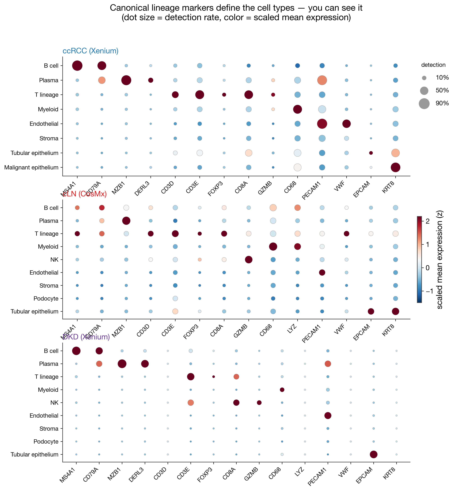
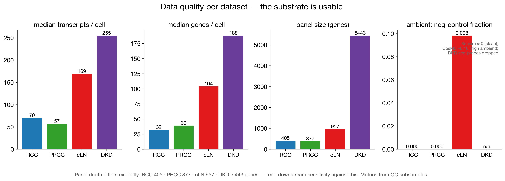

How to read these: ★ = hero (B1 the impact figure, C3 the headline). Click any figure to open it full size. Order follows the talk.
V1 · ccRCC vignette (Xenium ×2: discovery + replication)
V2 · cLN vignette (CosMx, 14 slides)
V3 · DKD vignette (CosMx + Xenium)

N · Normalization & harmonization (the deliberate bridge)

Canonical lineage markers × harmonized cell types; dot size = detection rate, color = scaled mean expression. B (MS4A1/CD79A), plasma (MZB1/DERL3), T (CD3D/E), myeloid (CD68/LYZ), endothelial (PECAM1/VWF), epithelial (EPCAM/KRT8), plus Treg (FOXP3) and cytotoxic (CD8A/GZMB) where resolved. The marker→type diagonal IS the typing veracity. [PNG · SVG]

X · Cross-context — the earned comparison (across disease settings)
P · Platforms & caveats
Supporting — global QC overview & cross-study aggregate evidence

Median transcripts/cell, genes/cell, panel depth, and ambient signal (cLN negmean). Panel depth differs explicitly (RCC 405 · PRCC 377 · cLN 957 · DKD 5 443) — read downstream sensitivity against this. DKD/Xenium neg-probes were dropped from the release, so ambient is not computable there. [PNG · SVG]
Caveats baked into the figures
- cLN T-lineage is unreliable (~35% epithelial CD3 contamination) — excluded from conserved-T claims.
- The ccRCC stroma–immune inversion (C5) is provisional — not tile-verified.
- B-aggregate niches are associational / colocalization, not communication or causation.
- No patient column for DKD (donor clustering uncontrolled); ccRCC epithelium is malignant (interpreted separately).
- D1 is a programmatic schematic — a starting point for manual vector polish.